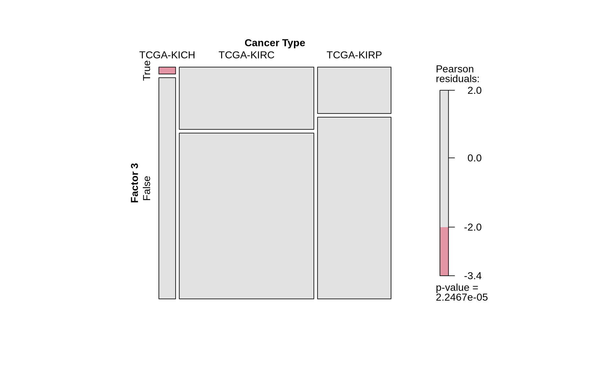
8 Characterization of Factor 3
8.1 On this page
Biological insights and take-home messages are at the bottom of the page at section Lesson Learnt: Section 8.6.
- Here we perform a clinical and molecular characterization of the patients the fall into the Factor 3 identified with the multi-omics factor analysis (see Chapter 6). Patients that belong to Factor 3 have in fact a higher risk for a worse clinical outcome (see Chapter 7).
- First, we test the association of Factor 3 with multiple clinical covariates, such as the tumor stage, its histological grade and pathological grade.
- Then, we identify the multi-omics signature of Factor 3, and we build a gene-interaction network for the top molecular features associated with Factor 3.
- Finally, we look for specific CNV or somatic mutation signatures overrepresented in Factor 3 patients.
8.2 Factor 3 overepresentation across clinical groups
Factor 3 seems slightly associated with the tumor severity and the covariates pathologic tumor grading, subtype selected, tumor cells, tumor nuclei, tumor stage, tumor status and vital status (see Chapter 6). And indeed, we have confirmed with the survival analysis (see Chapter 7) that patients that belong to Factor 3 have in fact a higher risk for a worse clinical outcome.
We can statically test the association between Factor 3 and clinical metadata that we have observed correlating with it. First, we classify patients into belonging to Factor 3 or not by determining the right cut-off on Factor 3 weights with the surv_cutpoint function of the survimner package. This results in 206 Factor 3 patients and 681 patients that do not belong to Factor 3. Similarly to what we have done in Chapter 1, we run demographic statistics (chi-squared and Fisher exact tests) to see if any clinical covariate is significantly overrepresented in Factor 3 patients, under the null hypthesis that the distribution of each covariate in the two patients groups is the same.
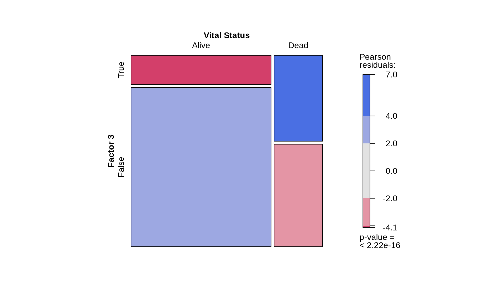
To confirm our observation that KIRC is not strictly associated with worse outcome, we see that Factor 3 patients are not overrepresented in any of the three kidney cancer types, however, KICH patients are underrepresented. Factor 3 patients have a significant higher chance to be dead or to have residual disease. We can also observe a interesting pattern for the tumour advancement (tumor stage, tumor pathological grade, tumor histological grade): Factor 3 patients are proportionally underrepresented in early tumors and more overrepresented in more advanced tumours, suggesting that Factor 3 is associated with tumor progression.
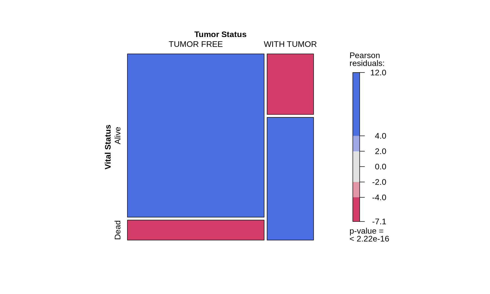
Intuitively, residual disease is associated with worse clinical outcome. Indeed, we can observe a strong association between residual disease and worse outcome (p-value < 2.22e-16). Since Factor 3 seems overrepresented in patients with residual disease or worse clinical outcome, and it seems associated with hallmarks of tumor progression, a molecular characterization of Factor 3 could provide the opportunity to discover prognostic biomarkers for patients with kidney carcinomas as well as novel therapeutics targets to improve the clinical outcome.
8.3 Multi-omics signature
For the molecular characterization of Factor 3, we go back to the multi-omics factor analyses we have performed in Chapter 6 and we explore the how the patients are distributed across the first three factors. Interpretation of the factor analysis and the relative position of the samples across each factor is similar to the interpretation of the principal components in a PCA.
Indeed, we can confirm that KIRC and KIRP are not separated by Factor 3, and only 2 KICH patients belongs to Factor 3.
Let’s explore the contribution of each omics layer to Factor 3.
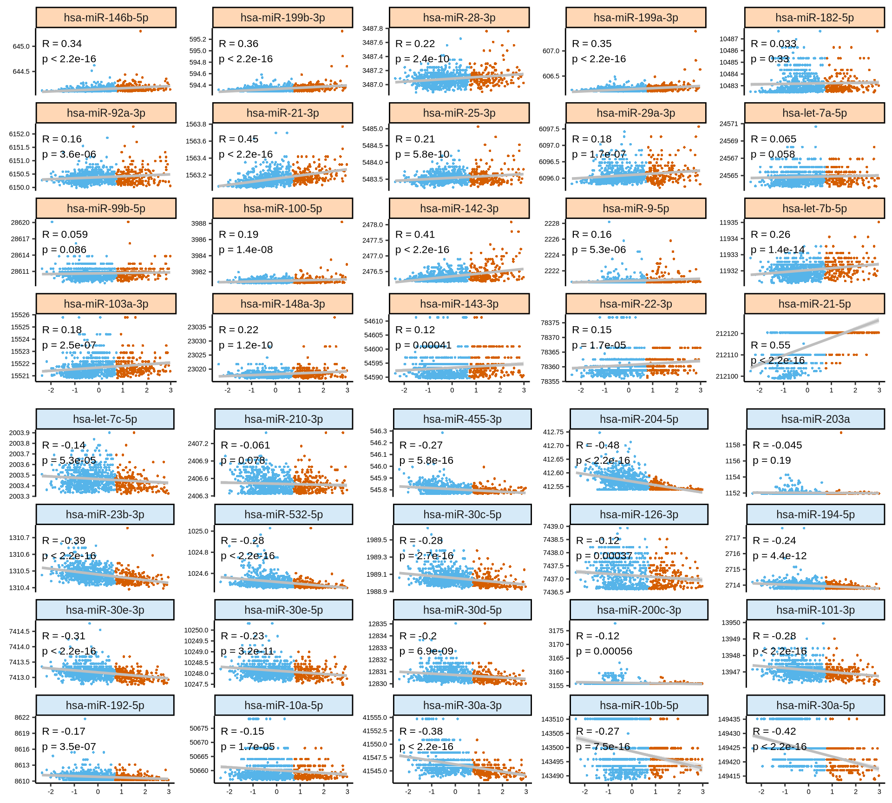
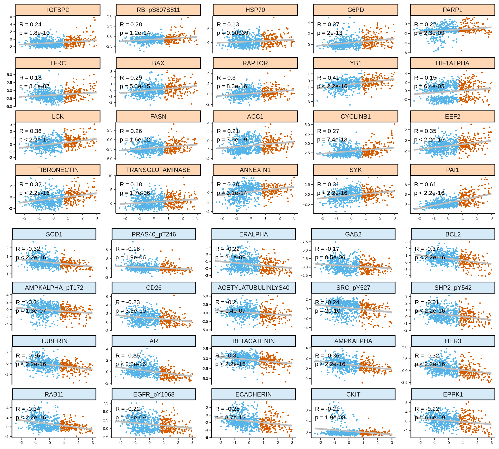
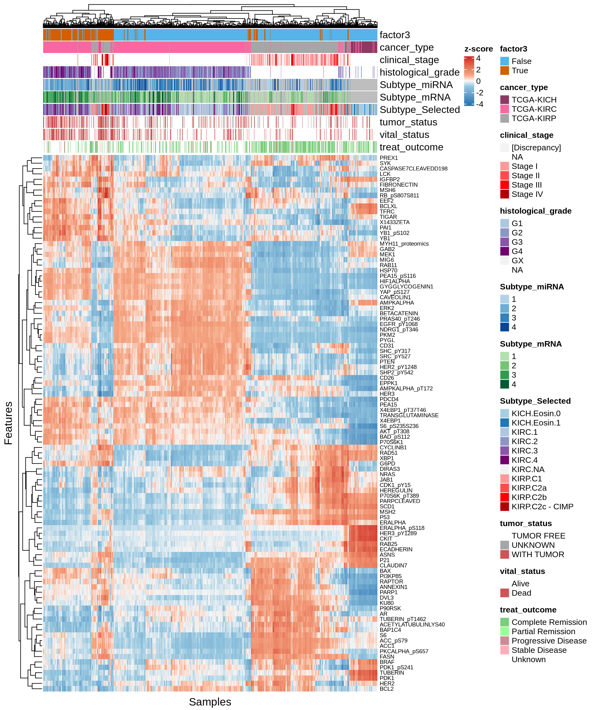
As usual, the interpretation of these high dimensional data is not straightforward, but we can pick on some emerging trends:
- Trancriptomics:
- Transcriptomics: Most of positive features seems not linear. Negative factors, which are strongly associated with KIRC, are instead linear. Looking at the heatmap with the top 100 features with highest absolute weight, we can see that these features are mostly associated to KIRC, which clusters in a single large block on the right hand side of the heatmap. KICH and KIRP seems as well quite clustered based on the top 100 transcriptomics features, except for a small clusters of KIRP patients that sits next to next to KIRC where most of the KIRP patients with worse outcome are located. micro-RNAs: Both features with high positive and high negative weights seems to mostly have linear relationships with Factor 1. We can observe as well the KIRC -> KICH -> KIRP gradient detected as well in the Factor 1 X Factor 2 biplot. Some of the features scatterplots also show some linear artefacts, where the samples all sits at the same y-axis position. This is probably due to the fact that in Factor 1 the weight is 0 for most of the micro-RNAs features. Looking at the heatmap, KIRC is clearly divided into two different clusters, with the smallest one on the left-hand side of the heatmap having most of the patients with worse outcome (vital status == “Dead”). The features with the highest weight responsible for this cluster are hsa-miR-21-3p, hsa-miR-21-5p, hsa-miR-25-3p, hsa-miR-379-5p, hsa-miR-134-5p and the micro-RNA family hsa-miR-199a-3p, hsa-miR-199a-5p, hsa-miR-199b-3p. KICH and KIRP seems to have clear patterns of different micro-RNAs weights that separates them from KIRC. Proteomics: Most of the proteomics features seems linear for Factor 1. There is a clear cluster separating KIRC from KICH and KIRP. The proteomics data are clearly driven from the metabolic signature of KIRC with high glycolysis (Glyceraldehyde-3-Phosphate Dehydrogenase GAPDH, Lactate Dehydrogenase A and B LDHA and LDHB, Pyruvate Kinase M1/2 PKM2, Glycogen Phosphorylase B, L and M PYGB, PYGL, PYGM) and hypoxic adaptation (Carbonic Anhydrase 9 CA9, Hypoxia Inducible Factor 1 Subunit Alpha HIF1A, Heat-Shock Protein 70 HSP70 and pT346: N-Myc Downstream Regulated 1 NDRG1_pT346). In addition to those proteins, we identified also oncogenes p53, Cyclin B1, and PDL1, which is involved in tumor immune evasion The heatmap of top 100 features with highest absolute weight show clear clusters separating KIRC from KICH and KIRP. KIRP can possibly be separated as well into two smaller subclusters driven by two different groups of proteins. Epigenomics: The scatterplots of the features with highest absolute weights suggested that linearity is not present for all of them. However, KIRC and KIRP are clearly separated, and the KIRC -> KICH -> KIRP gradient seems maintained across all top features. Looking at the heatmap, KICH methylation profile seems overlapping with both KIRC and KIRP. KIRC samples are divided in 2 clusters with no clear correlation with the clinical covariates that we have included on the top of the heatmap. Most of the top 100 epigenomics features are associated with KIRP.
Overall, based on these results, we expect transcriptomics, proteomics and epigenomics top features to characterize KIRC. KICH methylation profile seems overlapping with both KIRC and KIRP. micro-RNAs top features seems to separate the KIRC patients with had a worse clinical outocome.
8.3.1 Multi-omics interaction network
GET top molecules
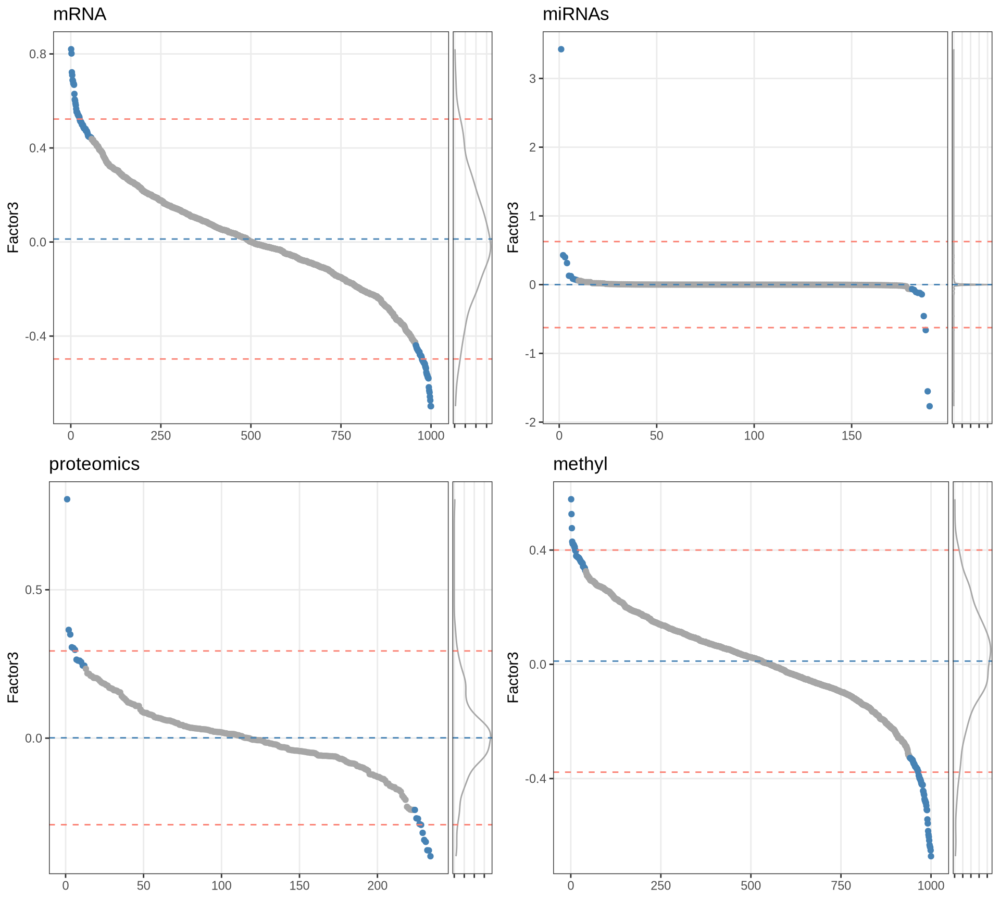
many molecules stands out: mir-21 PAI-1 (known marker of worse prognosis) https://jcp.bmj.com/content/64/10/893
get Omnipath interactions
Let’s build the network now
We can also remove the PPI interactions retrieved from STRING, and use only a gene interaction networks reconstructed from the OmniPath interaction networks. This may help to generate a simplified, more readable gene network.
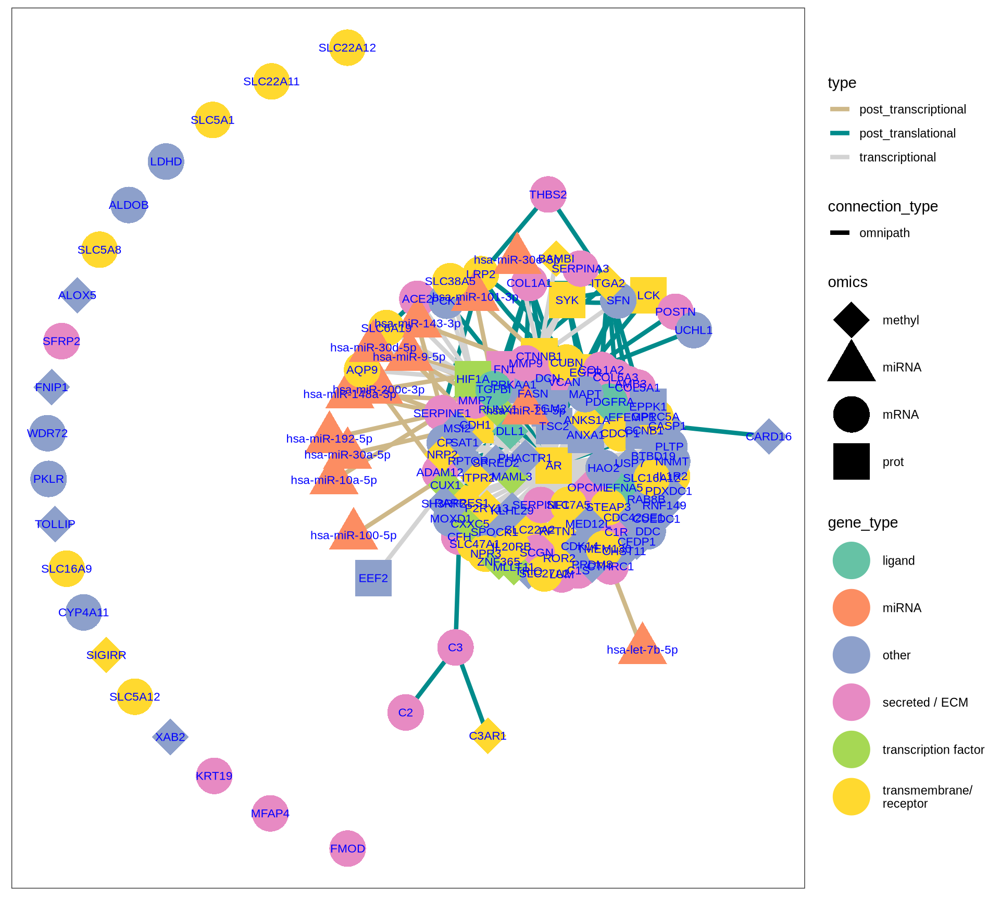
ss
8.3.2 Pathway analysis
prep gene list
Some relevant biological processes
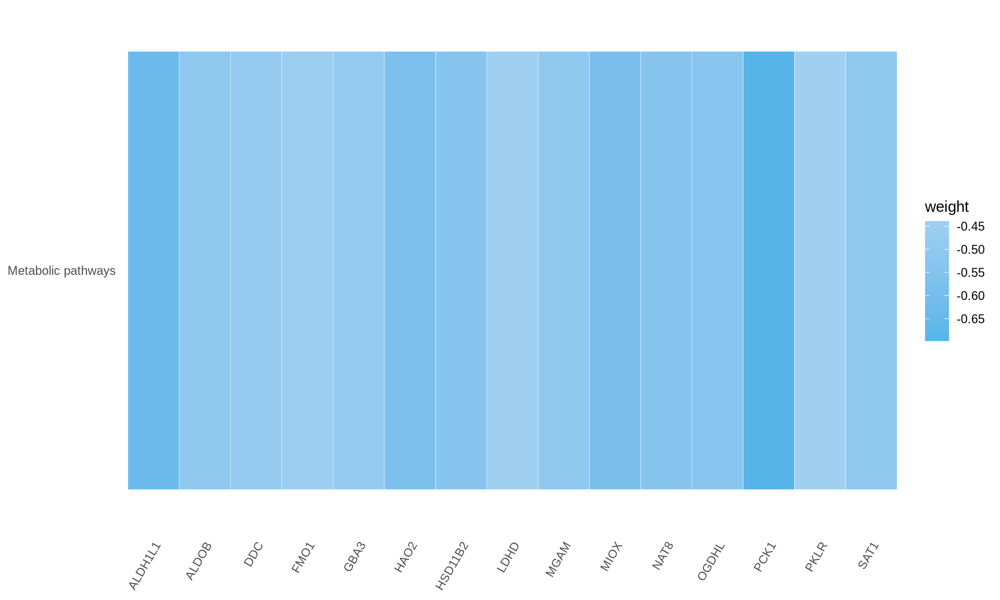
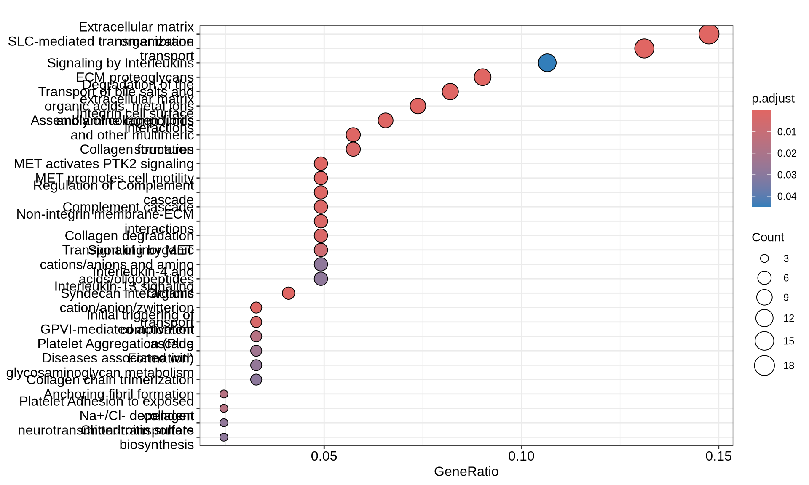
KEGG metabolic is underrepresented with PKLR LDHD FMO1 DDC GBA3 MGAM SAT1 ALDOB OGDHL HSD11B2 NAT8 HAO2 MIOX ALDH1L1 PCK1
8.4 CNVs on Factor3 genes
8.4.1 CNVs signatures associated to Factor3
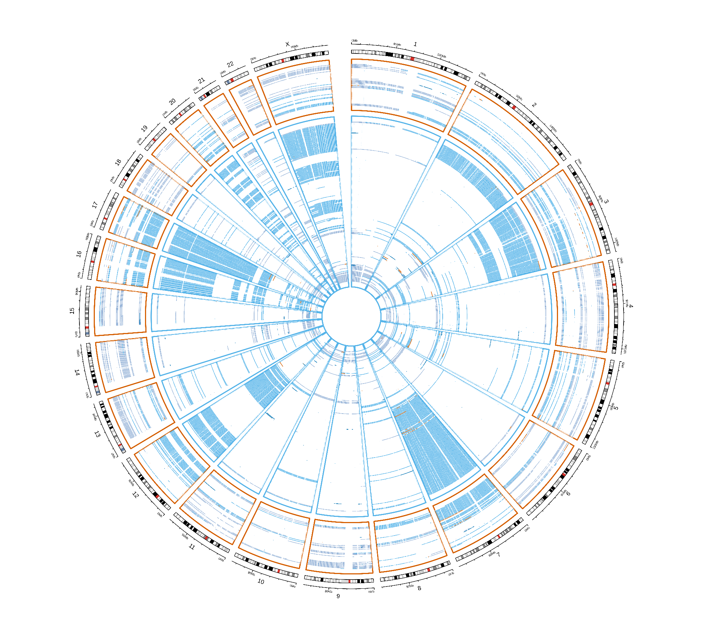
What a catch, we do not see much.
8.5 Somatic Mutations on Factor3 genes
8.5.1 Mutational signatures associated to Factor3
With a general overview we cannot see much. Let’s develop another way to look ath the data
MUTATIONS IN A MANHATTAN PLOTS
which mutation is enriched in the Factor3????
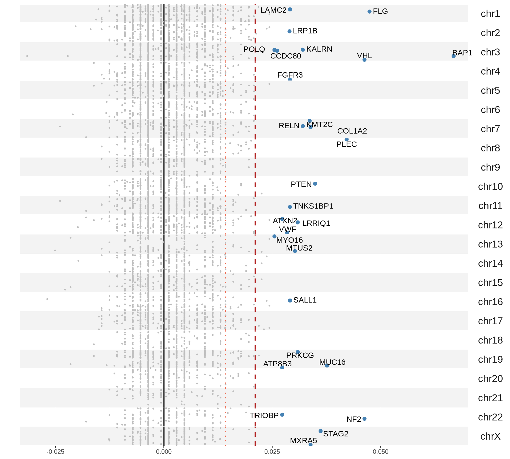
BAP1 mutations associated with worse outcome https://ascopubs.org/doi/10.1200/JCO.2024.42.4_suppl.466 https://linkinghub.elsevier.com/retrieve/pii/S0046817722002064
8.6 Lessons Learnt
[[[[PROPER DESCRIPTION OF FINDINGS AND TRANSCRIPTOMICS ENRICHMENTS]]]]
So far, we have learnt:
- A
- From the overrepresentation analysis, we observe that:
- Factor 3 is not overrepresented in KIRC or KIRP, but it is underrepresented in KICH
- Factor 3 is overrepresented in patients that died and in patients with residual disease
- Factor 3 is porportionally overrepresented in more advanced tumours accoriding to the staging, pathological grade and histological grade.
RESIDUAL DISEASE == PEOPLE DIES
Can we develop prognostic markers out of it? Can we identify additional therapeutic targets that could improve this outcome???
8.7 Session Information
Note
R version 4.3.2 (2023-10-31)
Platform: x86_64-conda-linux-gnu (64-bit)
Running under: openSUSE Tumbleweed
Matrix products: default
BLAS/LAPACK: /home/andrea/miniforge3/envs/moai/lib/libmkl_rt.so.2; LAPACK version 3.9.0
locale:
[1] LC_CTYPE=en_US.UTF-8 LC_NUMERIC=C
[3] LC_TIME=it_IT.UTF-8 LC_COLLATE=en_US.UTF-8
[5] LC_MONETARY=en_US.UTF-8 LC_MESSAGES=en_US.UTF-8
[7] LC_PAPER=en_US.UTF-8 LC_NAME=C
[9] LC_ADDRESS=C LC_TELEPHONE=C
[11] LC_MEASUREMENT=en_US.UTF-8 LC_IDENTIFICATION=C
time zone: Europe/Brussels
tzcode source: system (glibc)
attached base packages:
[1] parallel grid stats4 stats graphics grDevices utils
[8] datasets methods base
other attached packages:
[1] vcd_1.4-13
[2] UpSetR_1.4.0
[3] umap_0.2.10.0
[4] stringr_1.5.1
[5] scales_1.3.0
[6] RColorBrewer_1.1-3
[7] qs_0.27.2
[8] PCAtools_2.14.0
[9] missMethyl_1.36.0
[10] IlluminaHumanMethylationEPICanno.ilm10b4.hg19_0.6.0
[11] mCSEA_1.22.0
[12] Homo.sapiens_1.3.1
[13] TxDb.Hsapiens.UCSC.hg19.knownGene_3.2.2
[14] GO.db_3.18.0
[15] OrganismDbi_1.44.0
[16] GenomicFeatures_1.54.4
[17] mCSEAdata_1.22.0
[18] org.Hs.eg.db_3.18.0
[19] IlluminaHumanMethylation450kanno.ilmn12.hg19_0.6.1
[20] minfi_1.48.0
[21] bumphunter_1.44.0
[22] locfit_1.5-9.10
[23] iterators_1.0.14
[24] foreach_1.5.2
[25] Biostrings_2.70.3
[26] XVector_0.42.0
[27] SummarizedExperiment_1.32.0
[28] MatrixGenerics_1.14.0
[29] matrixStats_1.5.0
[30] Gviz_1.46.1
[31] gridExtra_2.3
[32] ggraph_2.2.1
[33] GenomicRanges_1.54.1
[34] GenomeInfoDb_1.38.8
[35] forcats_1.0.0
[36] EnhancedVolcano_1.20.0
[37] ggrepel_0.9.6
[38] ggplot2_3.5.1
[39] edgeR_4.0.16
[40] limma_3.58.1
[41] DT_0.33
[42] dplyr_1.1.4
[43] DOSE_3.28.2
[44] DMRcate_2.16.1
[45] data.table_1.16.4
[46] cowplot_1.1.3
[47] clusterProfiler_4.10.1
[48] circlize_0.4.16
[49] BiocSingular_1.18.0
[50] BiocParallel_1.36.0
[51] AnnotationDbi_1.64.1
[52] IRanges_2.36.0
[53] S4Vectors_0.40.2
[54] Biobase_2.62.0
[55] BiocGenerics_0.48.1
loaded via a namespace (and not attached):
[1] igraph_2.1.4 graph_1.80.0
[3] Formula_1.2-5 zlibbioc_1.48.2
[5] tidyselect_1.2.1 rvest_1.0.4
[7] bit_4.5.0.1 doParallel_1.0.17
[9] clue_0.3-66 lattice_0.22-6
[11] rjson_0.2.23 nor1mix_1.3-3
[13] blob_1.2.4 rngtools_1.5.2
[15] S4Arrays_1.2.1 base64_2.0.2
[17] dichromat_2.0-0.1 scrime_1.3.5
[19] png_0.1-8 cli_3.6.3
[21] ggplotify_0.1.2 ProtGenerics_1.34.0
[23] askpass_1.2.1 multtest_2.58.0
[25] openssl_2.3.1 BiocIO_1.12.0
[27] purrr_1.0.2 basilisk.utils_1.14.1
[29] uwot_0.2.2 shadowtext_0.1.4
[31] curl_6.2.0 mime_0.12
[33] evaluate_1.0.3 tidytree_0.4.6
[35] ComplexHeatmap_2.18.0 stringi_1.8.4
[37] backports_1.5.0 XML_3.99-0.18
[39] lubridate_1.9.4 httpuv_1.6.15
[41] magrittr_2.0.3 OmnipathR_3.10.1
[43] rappdirs_0.3.3 splines_4.3.2
[45] mclust_6.1.1 RApiSerialize_0.1.4
[47] KMsurv_0.1-5 jpeg_0.1-10
[49] doRNG_1.8.6.1 survminer_0.5.0
[51] logger_0.4.0 corrplot_0.95
[53] bsseq_1.38.0 DBI_1.2.3
[55] HDF5Array_1.30.1 reactome.db_1.86.2
[57] jquerylib_0.1.4 genefilter_1.84.0
[59] withr_3.0.2 enrichplot_1.22.0
[61] lmtest_0.9-40 RBGL_1.78.0
[63] tidygraph_1.3.1 rtracklayer_1.62.0
[65] BiocManager_1.30.25 htmlwidgets_1.6.4
[67] fs_1.6.5 biomaRt_2.58.2
[69] labeling_0.4.3 SparseArray_1.2.4
[71] cellranger_1.1.0 annotate_1.80.0
[73] reticulate_1.40.0 VariantAnnotation_1.48.1
[75] zoo_1.8-12 knitr_1.49
[77] beanplot_1.3.1 timechange_0.3.0
[79] patchwork_1.3.0 ggtree_3.10.1
[81] rhdf5_2.46.1 R.oo_1.27.0
[83] RSpectra_0.16-2 irlba_2.3.5.1
[85] gridGraphics_0.5-1 lazyeval_0.2.2
[87] yaml_2.3.10 maxstat_0.7-25
[89] survival_3.8-3 BiocVersion_3.18.1
[91] crayon_1.5.3 tidyr_1.3.1
[93] tweenr_2.0.3 later_1.4.1
[95] codetools_0.2-20 base64enc_0.1-3
[97] GlobalOptions_0.1.2 KEGGREST_1.42.0
[99] Rtsne_0.17 shape_1.4.6.1
[101] ReactomePA_1.46.0 Rsamtools_2.18.0
[103] filelock_1.0.3 foreign_0.8-88
[105] pkgconfig_2.0.3 xml2_1.3.6
[107] ggpubr_0.6.0 GenomicAlignments_1.38.2
[109] aplot_0.2.4 BSgenome_1.70.2
[111] ape_5.8-1 viridisLite_0.4.2
[113] biovizBase_1.50.0 xtable_1.8-4
[115] interp_1.1-6 car_3.1-3
[117] plyr_1.8.9 httr_1.4.7
[119] tools_4.3.2 htmlTable_2.4.3
[121] broom_1.0.7 checkmate_2.3.2
[123] nlme_3.1-167 selectr_0.4-2
[125] HDO.db_0.99.1 dbplyr_2.5.0
[127] ExperimentHub_2.10.0 survMisc_0.5.6
[129] crosstalk_1.2.1 digest_0.6.37
[131] permute_0.9-7 Matrix_1.6-5
[133] dir.expiry_1.10.0 farver_2.1.2
[135] tzdb_0.4.0 AnnotationFilter_1.26.0
[137] reshape2_1.4.4 yulab.utils_0.2.0
[139] exactRankTests_0.8-35 viridis_0.6.5
[141] rpart_4.1.24 glue_1.8.0
[143] cachem_1.1.0 BiocFileCache_2.10.2
[145] polyclip_1.10-7 Hmisc_5.2-2
[147] generics_0.1.3 mvtnorm_1.3-3
[149] statmod_1.5.0 ScaledMatrix_1.10.0
[151] GEOquery_2.70.0 carData_3.0-5
[153] vroom_1.6.5 gson_0.1.0
[155] dqrng_0.4.1 siggenes_1.76.0
[157] basilisk_1.14.3 graphlayouts_1.2.2
[159] gtools_3.9.5 readxl_1.4.3
[161] preprocessCore_1.64.0 ggsignif_0.6.4
[163] shiny_1.10.0 GenomeInfoDbData_1.2.11
[165] R.utils_2.12.3 rhdf5filters_1.14.1
[167] RCurl_1.98-1.16 memoise_2.0.1
[169] rmarkdown_2.29 pheatmap_1.0.12
[171] R.methodsS3_1.8.2 reshape_0.8.9
[173] Cairo_1.6-2 illuminaio_0.44.0
[175] stringfish_0.16.0 km.ci_0.5-6
[177] rstudioapi_0.17.1 cluster_2.1.8
[179] hms_1.1.3 munsell_0.5.1
[181] colorspace_2.1-1 rlang_1.1.5
[183] quadprog_1.5-8 DelayedMatrixStats_1.24.0
[185] sparseMatrixStats_1.14.0 ggforce_0.4.2
[187] mgcv_1.9-1 xfun_0.50
[189] abind_1.4-8 GOSemSim_2.28.1
[191] tibble_3.2.1 interactiveDisplayBase_1.40.0
[193] treeio_1.26.0 Rhdf5lib_1.24.2
[195] readr_2.1.5 bitops_1.0-9
[197] promises_1.3.2 scatterpie_0.2.4
[199] RSQLite_2.3.9 qvalue_2.34.0
[201] fgsea_1.28.0 DelayedArray_0.28.0
[203] compiler_4.3.2 prettyunits_1.2.0
[205] beachmat_2.18.1 graphite_1.48.0
[207] Rcpp_1.0.14 AnnotationHub_3.10.1
[209] MASS_7.3-60.0.1 progress_1.2.3
[211] R6_2.5.1 fastmap_1.2.0
[213] fastmatch_1.1-6 rstatix_0.7.2
[215] ensembldb_2.26.0 rsvd_1.0.5
[217] nnet_7.3-20 gtable_0.3.6
[219] latticeExtra_0.6-30 deldir_2.0-4
[221] htmltools_0.5.8.1 RcppParallel_5.1.10
[223] bit64_4.6.0-1 lifecycle_1.0.4
[225] MOFA2_1.12.1 restfulr_0.0.15
[227] sass_0.4.9 vctrs_0.6.5
[229] ggfun_0.1.8 bslib_0.8.0
[231] pillar_1.10.1 magick_2.8.5
[233] jsonlite_1.8.9 GetoptLong_1.0.5